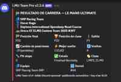
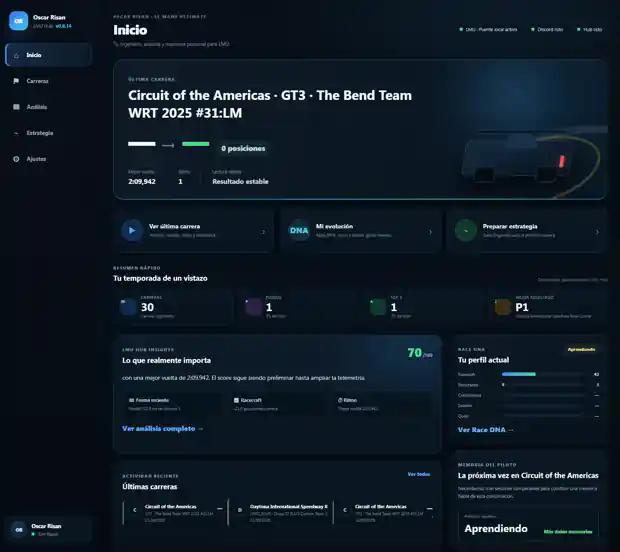

Risan Simracing Tools
Apps para publicar resultados, vigilar inscripciones, coordinar un equipo y analizar sesiones de Le Mans Ultimate. Aquí puedes ver funciones, capturas reales e instrucciones antes de descargar.
Ver app disponibleVer todasUna herramienta para cada problema
Cada app es independiente.

Resultados LMU → Discord
Publica automáticamente los resultados de carreras individuales y por equipos.
Ver e instalarRisan Race Alerts
Detecta inscripciones y envía avisos a Discord.
Descarga en unos días
LMU Hub
Sesiones, resultados, estrategia, análisis y memoria del piloto.
Ver estadoLMU Team Radio
TEAM, BOX, RACE-CONTROL, datos live, TTS y estrategia.
Ver estadoResultados LMU → Discord
Lee los archivos de resultados que genera LMU. No modifica ni inyecta nada en el juego.
Qué publica
Instalación
SHA-256: 62576c2ebdd8913b14cc3b6161842a542f583b596936fd7942c55abde98e5078
Risan Race Alerts
Inscripciones propias, amigos y eventos por equipos.
Funciones
Configuración
LMU Hub
Captura real de la interfaz actual.
LMU Team Radio
Discord gestiona la voz; Team Radio organiza la sesión.
Flujo básico
Las herramientas seguirán siendo gratuitas
Si quieres apoyar voluntariamente pruebas, servicios, desarrollo y documentación, puedes hacerlo por PayPal.